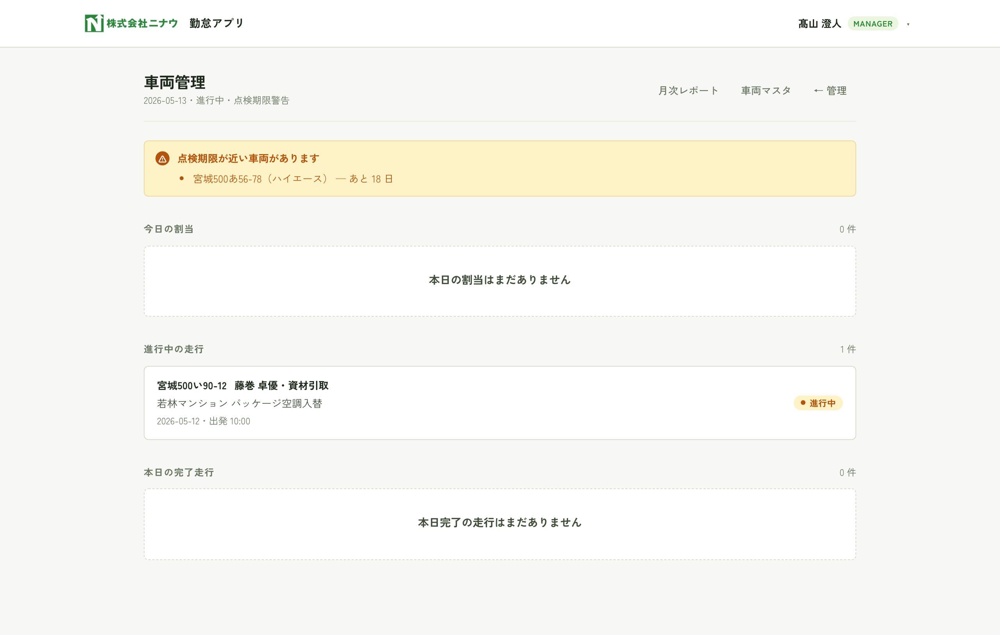
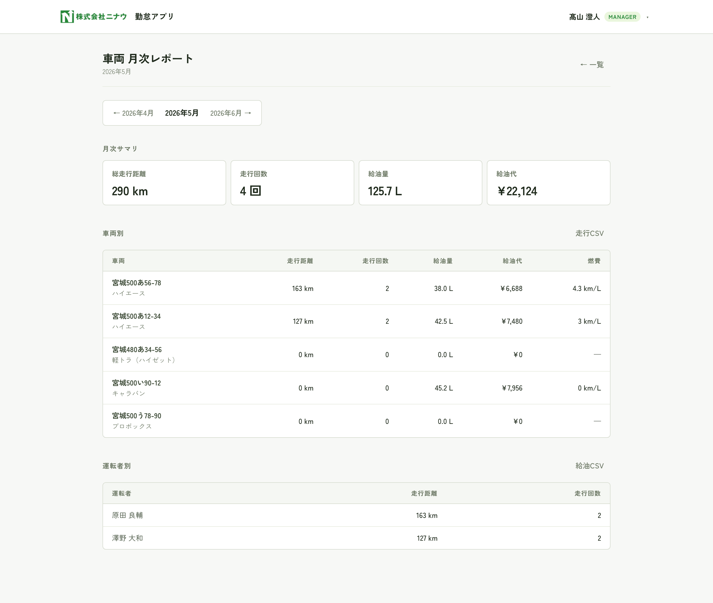
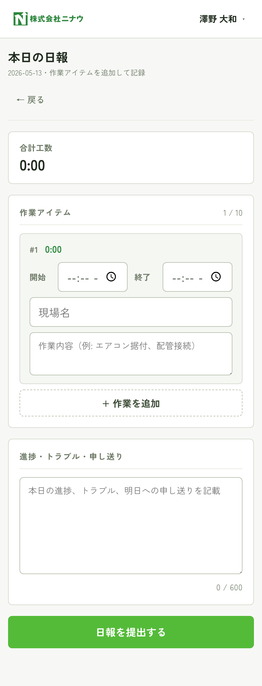
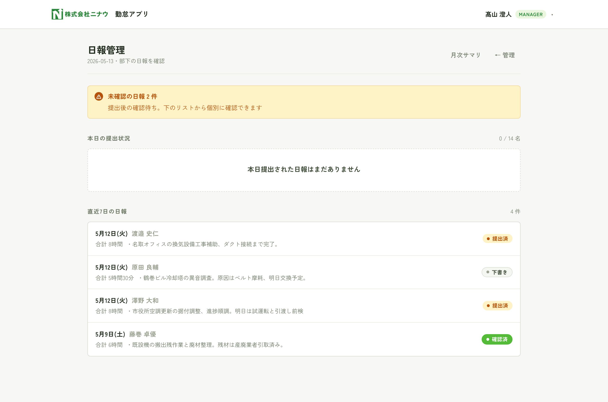
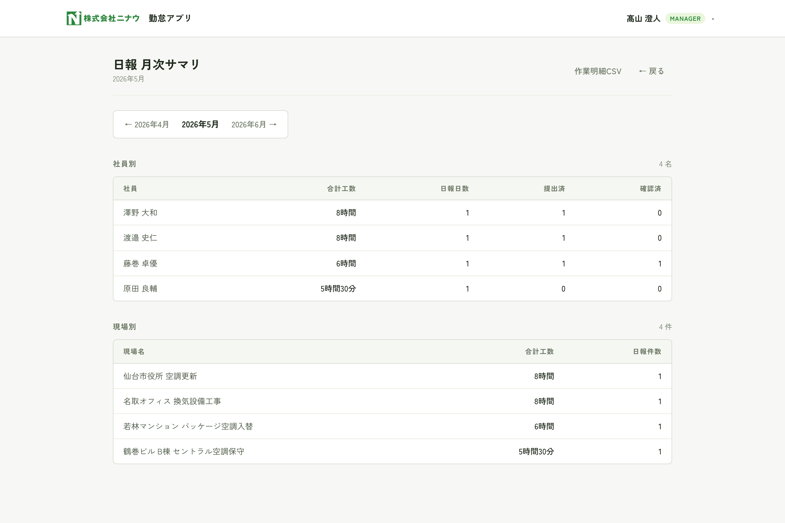

はじめに
本アプリは「打刻」と「残業申請」を1つの画面で完結させる勤怠管理ツールのデモ版です。
スマホブラウザでそのままアクセスでき、インストール不要で利用できます。
このマニュアルの読み方
立場により操作画面が異なります。以下のバッジで区別しています。
manager 経営層・部長・課長など承認権限を持つ人
member 現場社員・パート・バイト
用語
- 打刻
- 出勤・退勤の時刻を記録すること。
- 残業申請
- 事前/事後どちらでも提出可能。承認は manager が行う。
- 差戻
- 申請内容に修正が必要な場合、コメント付きで申請者に返すこと。再提出可能。
- 所定終業時刻
- 初期値 17:30。残業申請の開始時刻のデフォルト値として使用される。
目次
- 1ログインp.3
- 2打刻のしかたp.4
- 3残業申請を出す（社員）p.5
- 4勤怠ダッシュボード（管理者）p.7
- 5残業申請の承認（管理者）p.8
- 6月次レポート・CSV出力p.9
- 7設定・ユーザー管理p.10
- 8デモ機能：別の人で試すp.11
- 9よくある質問p.12
1ログイン
商談デモ版では「かんたん体験ログイン」を用意しています。
パスワード入力なしで、立場を選んでクリックするだけでログインできます。
- スマホのブラウザで https://attendance-demo-dun.vercel.app を開く
- 「かんたん体験ログイン」から試したい立場のカードをタップ
- 自動的にその役職の画面に遷移します（manager は管理画面、member は打刻画面）

ログイン画面（モバイル）
4つのデモ役職
| 役職 | 体験できること |
|---|
| 代表取締役 | 経営層として全体を俯瞰、すべての操作が可能 |
| 課長 | 残業承認・差戻のフローを操作 |
| 現場社員 | 残業申請を出す側の体験。自分のデータのみ閲覧可 |
| 蛸と衣 社員 | 別組織のメンバー目線 |
デモモードのためパスワード不要で誰でもログインできます。本番運用時はこの体験ログインを無効化し、各社員に個別のパスワードを発行します。
2打刻のしかた
出勤・退勤は巨大ボタンを1タップするだけ。
今が出勤中なら「退勤」、退勤済または未打刻なら「出勤」が自動表示されます。
- 画面中央の大きなボタン（緑=出勤 / オレンジ=退勤）をタップ
- 瞬時に記録され、画面下部の「本日の打刻履歴」に追加されます
- 状態バッジ（出勤中／退勤済／未打刻）が更新されます
残業申請への動線
打刻ボタンの下に「残業申請へ」リンクカードがあります。
その日の退勤打刻後に残業申請を出す場合はこちらから。
セッションは12時間有効。30分操作がないと自動的にログアウトします。

打刻画面（退勤済の例）
3残業申請を出す（社員）
member
現場社員や蛸と衣メンバーが、残業の事前申請・事後申請を提出する画面です。
3-1. 申請履歴を見る
- ヘッダー「[名前]▾」メニュー → 残業申請
- または打刻画面下部の「残業申請へ」リンクから

自分の申請履歴一覧
状態バッジの見方
- 申請中：承認待ち
- 承認済：完了
- 差戻：修正が必要、再申請可能
- 却下：認められなかった
4勤怠ダッシュボード（管理者）
manager
出勤中の社員・労働時間・長時間勤務の警告を1画面で把握します。
manager でログインすると最初に表示される画面です。
- ログイン直後の画面、もしくはヘッダーメニュー → 「管理画面」
- 上部の AI 今日のサマリー で全体状況を1行で確認
- 未承認バナー から残業承認キューに直接ジャンプ可能
- KPI 4枚（出勤中 / 退勤済 / 未出勤 / 合計労働時間）と タイムライン（ガントチャート） で詳細を確認

勤怠ダッシュボード（PC表示）
タイムラインは 緑=出勤中 / グレー=退勤済 / 赤=10時間超 で色分けされます。
現在時刻の縦線（NOW）も表示されるので「今どうなっているか」が一目で分かります。
5残業申請の承認（管理者）
manager
申請中の残業を「承認 / 差戻 / 却下」で処理します。
差戻と却下はコメントが必須です。
- ヘッダー → 「管理画面」→ 「承認キュー」、または未承認バナーから直接
- 申請カードの「承認」をタップで即時承認
- 「差戻」または「却下」をタップ → コメント入力欄が展開 → 確定
- 処理後はフィルタ「すべて」で過去の承認履歴も確認可能

残業承認キュー（PC表示）
差戻・却下の違い
| 操作 | 意味 | 申請者の次のアクション |
|---|
| 承認 | 申請を確定。月次集計に反映 | 不要 |
| 差戻 | 修正してもう一度出してほしい | コメントを見て再申請 |
| 却下 | 申請を認めない | 原則終了 |
6月次レポート・CSV出力
manager
実労働時間と承認済残業を月次で突き合わせ、CSVでダウンロードできます。
給与計算用・労務監査用の出力が想定です。
- 「管理画面」→ ヘッダーの「月次レポート」
- 月切替ナビ（◀／▶）または月選択フォームで対象月を選ぶ
- 合計バッジ4枚で月次サマリーを把握（承認済 / 申請中 / 却下 / 差分注意者）
- 「CSV（承認済）」または「全件CSV」ボタンでダウンロード

月次レポート（PC表示）
CSV出力の列
申請ID / 業務日 / 申請者 / 申請種別 / 状態 / 開始時刻 / 終了時刻 /
残業時間（分）/ 残業時間（h:mm）/ 現場名 / 作業内容 / 承認者 / 承認日時 / 差戻コメント
UTF-8 BOM付き・CRLF改行で出力されます。Excel で開くと文字化けせずに表示されます。
8デモ機能：別の人で試す
デモ版限定。ログアウトせずに別の役職に切り替えて挙動を比較できる機能です。
商談中に「manager視点」「member視点」を素早く行き来できます。
- 画面右上の「[名前]▾」プルダウンをタップ
- メニュー内の「デモ: 別の人で試す」セクション
- 切り替えたい役職をタップ
- 即座にその人としてログインし直し、適切な画面に遷移します
本番運用時はこの機能を無効化します。
各社員は自分のアカウントだけログインできるようになります。

ユーザーメニューを開いた状態
9車両管理
社用車の割当・走行記録・給油記録を一元管理。スマホで現場社員が登録し、
管理者は当日の利用状況・月次走行距離・燃費・給油代を把握できます。
使い方の流れ（社員）
- 「車両管理」を開き、空いている車両の「この車両を使う」をタップ
- 現場に向かう前に「出発を登録する」
- 出発時メーター・目的（据付/保守点検 等）・現場名を入力
- 帰社後に「帰着を登録する」で帰着時メーターを入力
- 給油時は「給油を登録する」から量・金額・給油所を記録
1日1台が基本。別の車両に変更したい場合は、新しい車両で「使う」を押すと
前の割当が自動で解除されます。
出発・給油登録画面
10車両管理（管理者）
管理者は「車両管理」ダッシュボードで当日の割当状況・進行中の走行・点検期限切迫を一覧でき、
月次レポートで車両別・運転者別の走行距離と給油費用を集計できます。

車両管理ダッシュボード（PC）
月次レポート
車両別の走行距離・走行回数・給油量・給油代・燃費（km/L）を集計。
運転者別の走行距離もテーブルで確認可能。CSVは「走行明細」「給油明細」を別途ダウンロードできます。

月次レポート（車両別・運転者別）
点検期限警告：30日以内に期限が迫る車両を自動で警告表示。
車両マスタ画面から期限を更新できます。
11日報
1日の業務内容を作業ごとに記録します。複数の作業（最大10件）を時刻つきで残せるので、
工数の月次集計や現場別の稼働分析にそのまま使えます。
使い方の流れ（社員）
- 「日報」を開き、「本日の日報を作成」をタップ
- 当日の打刻から作業の雛形が自動で入る場合は内容を編集
- 「+ 作業を追加」で時刻・現場・作業内容を追加（最大10件）
- 進捗・トラブル・申し送りを下部の自由記述欄に記載（600文字）
- 入力中は5秒ごとに自動保存。完了したら「日報を提出する」
提出後も取り下げ可能。「取り下げて編集に戻す」で再編集できます。
管理者が「確認済」にすると編集できなくなります。
日報作成画面

本日の日報作成（自動保存表示・合計工数集計）
12日報（管理者）
管理者は部下の提出日報を一覧で確認し、「確認済」マークでフィードバックできます。
月次サマリで社員別・現場別の工数を集計、CSV出力で工数管理ツール等にも連携可能。

日報管理ダッシュボード（PC）
月次サマリ
社員別に「合計工数・日報日数・提出済・確認済」、現場別に「合計工数・日報件数」を集計。
作業明細CSVは1日報＝複数行で出力されます。

日報 月次サマリ（社員別・現場別）